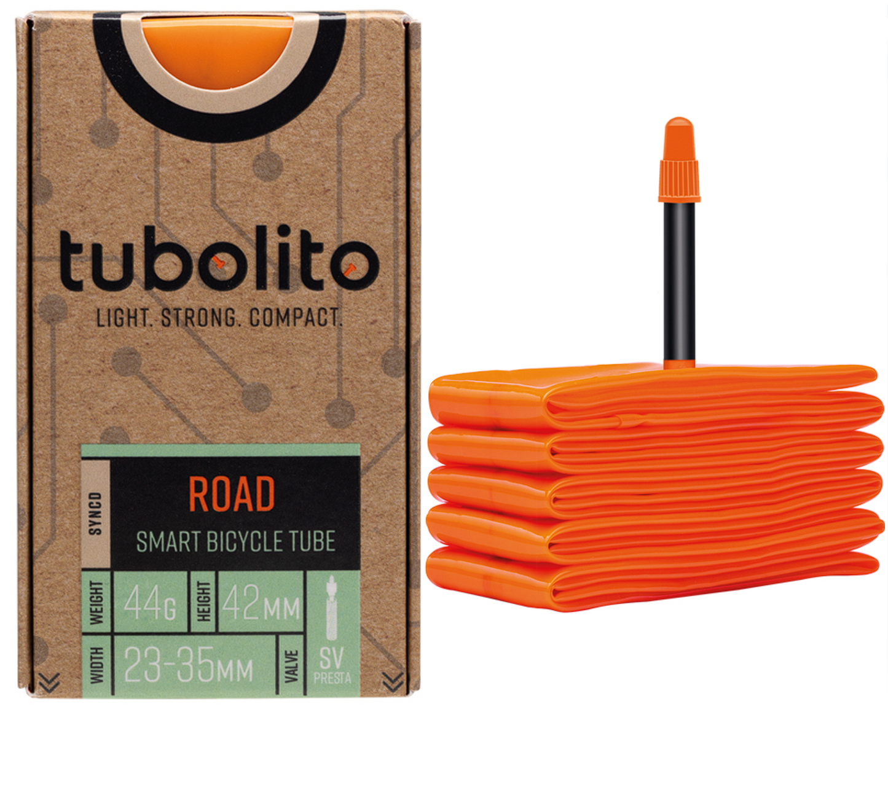

Troubleshooting
Tubolito SYNCD Troubleshooting
Find help with settings that do not save, missing pressure data, sensor names, pressure alerts and activity recording in TubeWitch for Tubolito SYNCD.

 Settings Not Saving
Settings Not Saving
If sensor IDs or related settings do not stick, fix the settings save issue first before troubleshooting the sensors themselves.
ALERT: SAVING SETTINGS WITH THE CONNECT IQ MOBILE APP IS AFFECTED BY A BUG IN THE GARMIN IQ SYSTEM. MAKE SURE THE TUBEWITCH DATA FIELD IS VISIBLE ON YOUR GARMIN DEVICE WHEN CHANGING SETTINGS. IF SETTINGS STILL DO NOT SAVE, TRY GARMIN EXPRESS.
WORKAROUND - Garmin Connect IQ Mobile App
If you are impacted by this Garmin Settings bug, first try modifying settings using these exact steps with the Garmin Connect IQ mobile app.
- Using the Garmin Connect IQ mobile app, uninstall TubeWitch for Tubolito SYNCD. This will clear all TubeWitch settings.
- Reboot the Garmin device and restart the Garmin Connect IQ mobile app.
- Reinstall TubeWitch for Tubolito SYNCD.
- Add the TubeWitch data field to a data screen and open that screen to load the field.
- Leave the TubeWitch data field visible on your Garmin device.
- In the Garmin Connect IQ mobile app, open TubeWitch settings, enter the full sensor name and pressure targets for each enabled wheel, and save immediately.
- Do not go back into the nested Sensor Set before tapping Save.
- Confirm your live pressures.
If this works, keep the TubeWitch data field visible on your Garmin device when making future settings changes.
WORKAROUND - Garmin Express
If the issue persists, modify settings using these exact steps with Garmin Express.
- Using the Garmin Connect IQ mobile app, uninstall TubeWitch for Tubolito SYNCD. This will clear all TubeWitch settings.
- Reboot the Garmin device.
- Using the Garmin Connect IQ mobile app, reinstall TubeWitch for Tubolito SYNCD.
- Add the TubeWitch data field to a data screen and open that screen to load the field.
- Close all Garmin apps on your phone and turn off Bluetooth.
- Connect the Garmin device to a computer and use Garmin Express to modify the settings.
- When done, sync the Garmin device using the Garmin Connect mobile app.
- Reboot your Garmin device.
- Confirm your live pressures.
If the issue continues, contact TubeWitch support and include which Garmin device you are using.
General settings-saving tips
Even when Garmin is working normally, the steps below can help if settings do not save reliably.
First, make sure the TubeWitch data field is visible on your Garmin device before changing settings in the Connect IQ mobile app.
If sensor IDs or other settings are not being saved by the Garmin Connect IQ mobile app, try entering one sensor ID first and saving immediately before entering the second. Garmin's save process can be inconsistent when many settings are changed at once.
Use Garmin Express for the most reliable way to save settings.
Nested settings revert before saving
If you back out of a Sensor Set or other nested settings group in the Garmin Connect IQ mobile app and then go back into it before saving, Garmin will revert to the old values.
This behavior is confusing, but it is normal for Garmin's nested settings screens.
To force a save, back out of the nested settings group and tap Save immediately from the main settings screen.
After saving, reopen TubeWitch settings in the Garmin Connect IQ mobile app and drill back down into the nested settings group to confirm the new values are there.
Sensor Name Issues
The sensor name is not accepted
Enter the full name, including the prefix and hyphen: SYNCD-C3D0 or the supported PSENS-1734 format. The four-character suffix alone is not a complete ID. Do not enter a Bluetooth address.
Show Sensor IDs displays only four characters
This is expected for a valid full sensor name. TubeWitch displays the final four characters to keep the data field readable. Verify the complete name in the saved Sensor Set settings.
When opening TubeWitch settings, an error message is shown
Garmin Connect IQ mobile app: "Cannot Load the web page. Try again later."
Garmin Express: "Error Loading Settings - We had a problem loading settings from this device. Please try again."
This usually means Garmin's settings service is temporarily unavailable. Try again later.
No Pressure Data
If no pressure is shown after setup, first confirm the sensor is working properly before changing other settings.
Check the sensors and saved names
- Move the wheels to wake the SYNCD sensors.
- Use the Tubolito SYNCD app to check that the sensors are broadcasting pressure.
- Open TubeWitch settings and confirm each complete name is saved in the correct Front or Rear slot.
- Confirm Enabled Sensors includes the wheels you want to display.
- For a single bike or wheelset, manually select the correct Active Sensor Set rather than Auto.
- Temporarily enable "Show Sensor IDs" to check the displayed four-character suffixes.
Pressure stops updating while stationary
SYNCD sensors can sleep while stationary. Move the wheels to wake them and allow time for a new broadcast. TubeWitch keeps showing the last received pressure.
The current BLE freshness interval is 250 seconds. A "?" marks stale pressure; the configurable sensor timeout is separate and defaults to 15 minutes during an activity.
Sensor Not Found or an X appears
Move the wheels, confirm the saved names and restart scanning by tapping the field when Touch Data Field is enabled, or stopping and resuming the Garmin activity.
The sensor battery has reached the end of its life
The SYNCD battery is not user-replaceable. Refer to Tubolito's battery exchange information.
Pressure Status / Alerts
Pressure is visible but no pressure alarm triggers
- Set the relevant Front or Rear Low Target / High Target in the active TubeWitch Sensor Set. A value of 0 leaves that limit disabled.
- Check that low or high audible, popup or vibration alerts are enabled as needed.
- Check Alarm Delay. The default is 10 seconds.
- Set High Target greater than Low Target when both are used.
Alerts use the wrong pressure limits
Confirm the active Sensor Set, saved targets and selected Unit of Measure. If units changed, update every set's targets: saved numbers are not automatically converted.
Front and Rear are assigned by the sensor-name slots in TubeWitch settings.
Popup or vibration alerts are not working
- Enable the corresponding low and high alert options in TubeWitch settings.
- Vibration alerts are available on supported Garmin watches.
- Popup alerts are available on supported newer Garmin devices.
Data field restarts after returning from the Garmin home screen
With Edge firmware 31.29+, Garmin changed how Connect IQ data fields behave. Returning from the home screen while no activity is recording can restart the field and its sensor search. If an activity is running or paused, TubeWitch should not restart when returning to the data screen.
Keep the TubeWitch data field visible when changing settings in the Connect IQ mobile app.
FIT Recording Problems / Crashes
If Garmin shows the IQ logo or one of your Connect IQ apps restarts during recording, the combined FIT recording load may be too high.
If Garmin data fields are recording too many FIT data points
Garmin limits how many custom FIT data points Connect IQ apps can record at once. TubeWitch records 5 custom FIT fields by default and up to 10 when all Activity Recording options are enabled.
Other IQ data fields or apps may also record custom FIT fields. If the combined total gets too high, one or more apps may restart and show the IQ logo.
To reduce the number of data points that TubeWitch is recording, disable items in the Activity Recording section of TubeWitch Settings, then reboot Garmin before testing again.
Activity Recording field counts:
Default recording fields:
- Record Front Pressure: 2 fields (Front Pressure, Avg Front Pressure)
- Record Rear Pressure: 2 fields (Rear Pressure, Avg Rear Pressure)
- Sensor Set Name: 1 field when activity recording is enabled
Optional recording fields:
- Record Front Pressure Alarm: 1 field
- Record Rear Pressure Alarm: 1 field
- Record Front Pressure Stale Data Indicator: 1 field
- Record Rear Pressure Stale Data Indicator: 1 field
- Record Sensor Set #: 1 field
App Upgrade Problems
The most common TubeWitch upgrade issue is the Garmin Connect IQ mobile app continuing to show an update even after the data field was already queued or installed.
Garmin Connect IQ mobile app still shows "Updating" after a TubeWitch upgrade
If upgrading from an earlier version of TubeWitch, the Garmin Connect IQ mobile app may appear stuck on "Updating," or it may queue and update the data field but show that an update is still available.
If this happens, reboot your Garmin device and restart your Garmin mobile apps to allow the update to complete and for any new settings to appear in the TubeWitch Settings.
TubeWitch Support
Use Garmin's in-app Contact Developer link to contact TubeWitch support. Include your Garmin model, TubeWitch version and a description of the issue.

Contact the developer
Use the Garmin Connect IQ mobile app.
Open the listing for TubeWitch for Tubolito SYNCD so your request is associated with the correct app.
- Open the TubeWitch for Tubolito SYNCD Garmin Store page.
- Tap Open in App.
- Scroll to the bottom of the TubeWitch app page, then tap Contact Developer.
Include your email address to receive a reply.
Be sure to monitor your spam folder for replies.